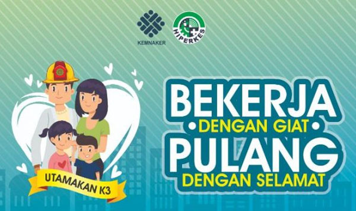

tentang k3 yang harus di ingat
 Kesehatan dan Keselamatan Kerja, biasa disingkat K3, adalah suatu upaya guna mengembangkan kerja sama, saling pengertian, dan partisipasi efektif dari pengusaha atau pengurus dan tenaga kerja dalam tempat-tempat kerja untuk melaksanakan tugas dan kewajiban bersama di bidang kesehatan dan keselamatan kerja dalam rangka melancarkan usaha produksi. Melalui pelaksanaan K3 lingkungan kerja ini diharapkan tercipta tempat kerja yang aman, sehat, dan bebas dari pencemaran lingkungan, sehingga dapat mengurangi atau terbebas dari kecelakaan kerja dan penyakit akibat kerja. Jadi, pelaksanaan K3 lingkungan kerja dapat meningkatkan efisiensi dan produktivitas kerja. Oleh karena itu k3 sangat berguna di berbagai bidang pekerjaan agar masalah di kemudian hari. tidak terjadinya kecelakaan kerja maupun kerja, Agar para pekerja dapat berkumpul bersama keluarga tersayang ❤️❤️😊
- Identifikasi dan Penilaian Risiko.
- Referensi Perencanaan dan Organisasi.
- Pemantauan Keselamatan dan Kesehatan.
- Saran Pendidikan dan Pelatihan.
- Panduan Pengendalian Bahaya.
- Evaluasi Efektivitas.
- Manajemen Pertolongan Pertama dan Tindakan Darurat.